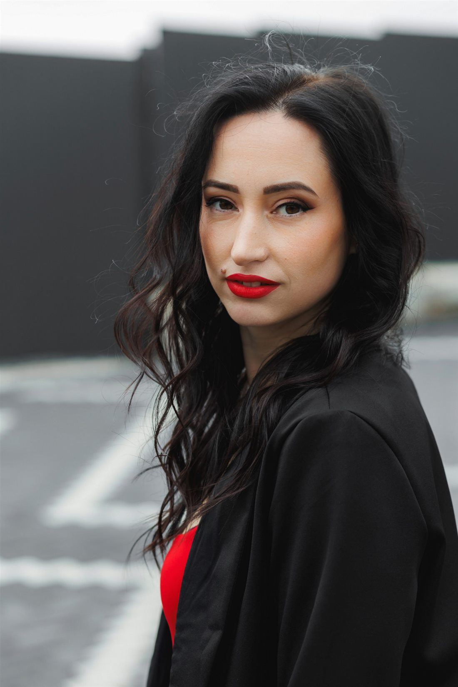
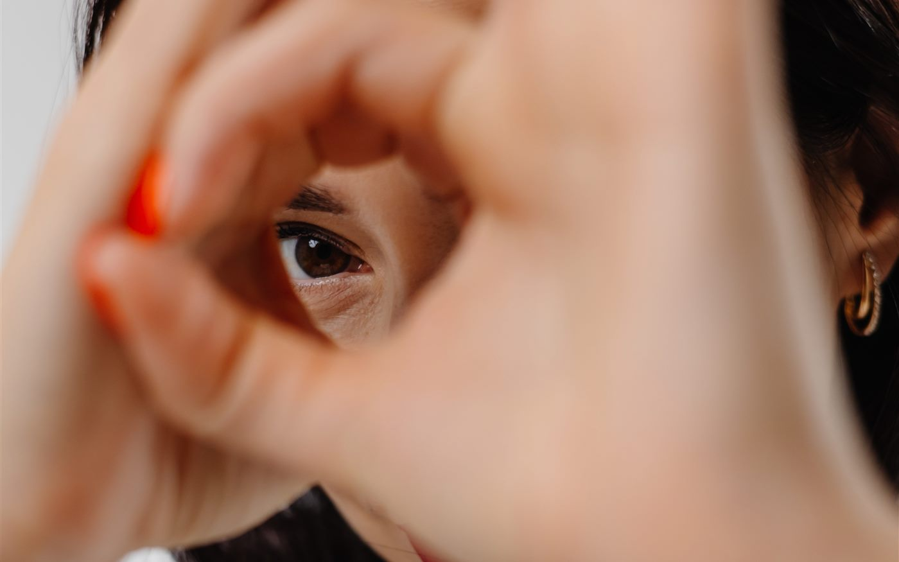
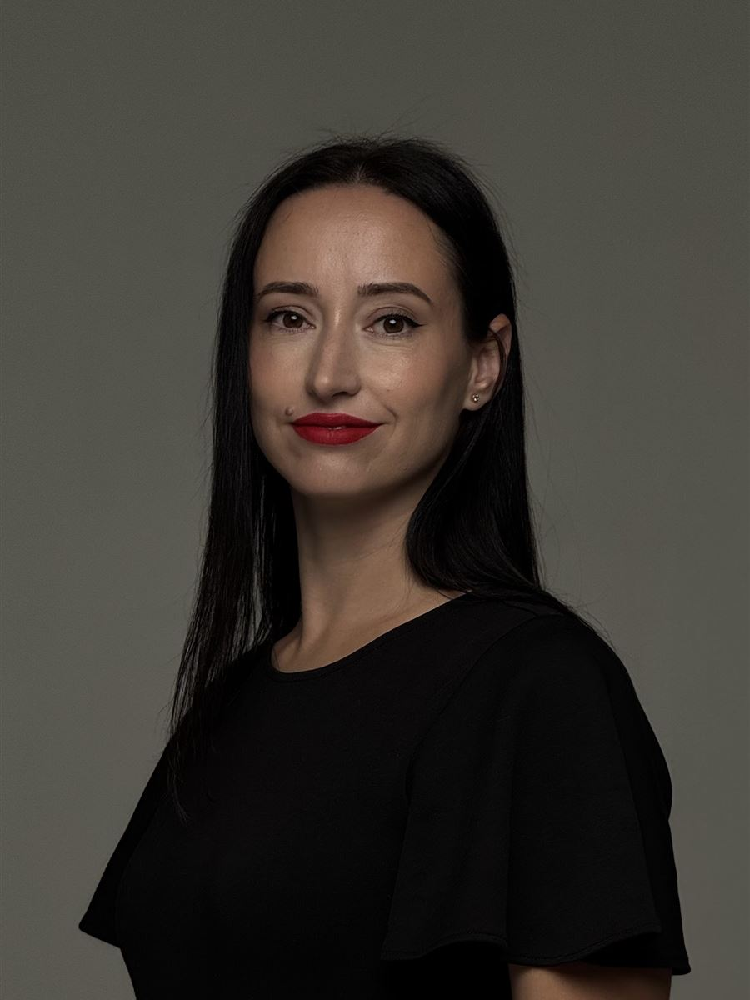
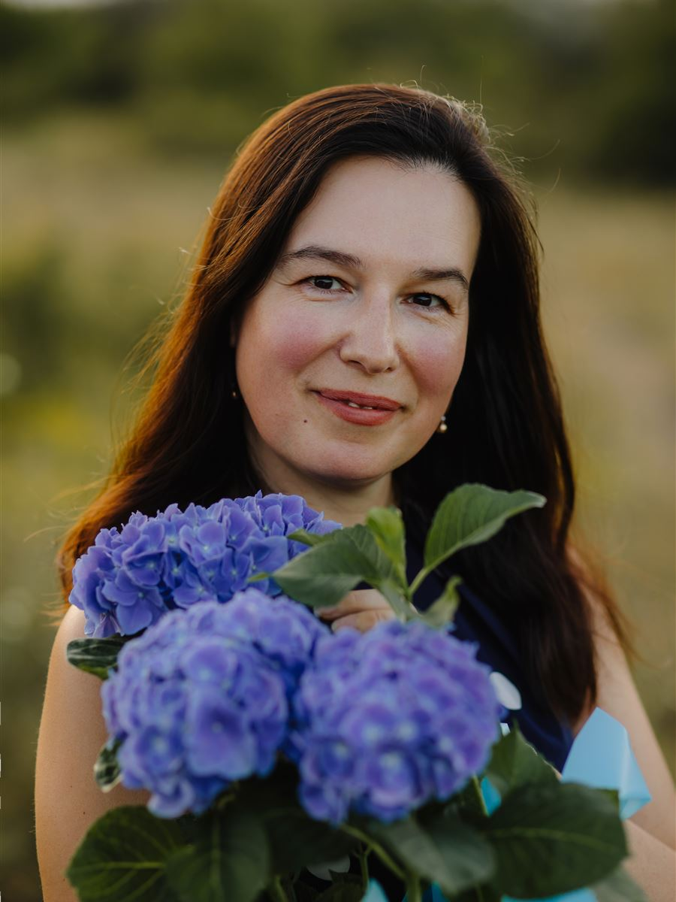
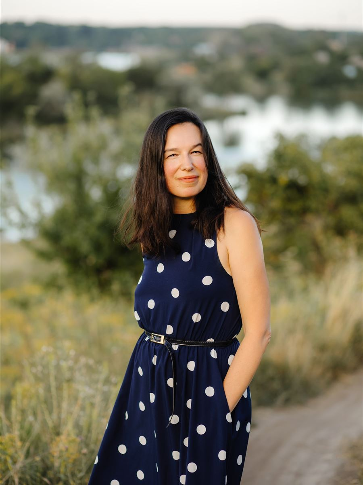
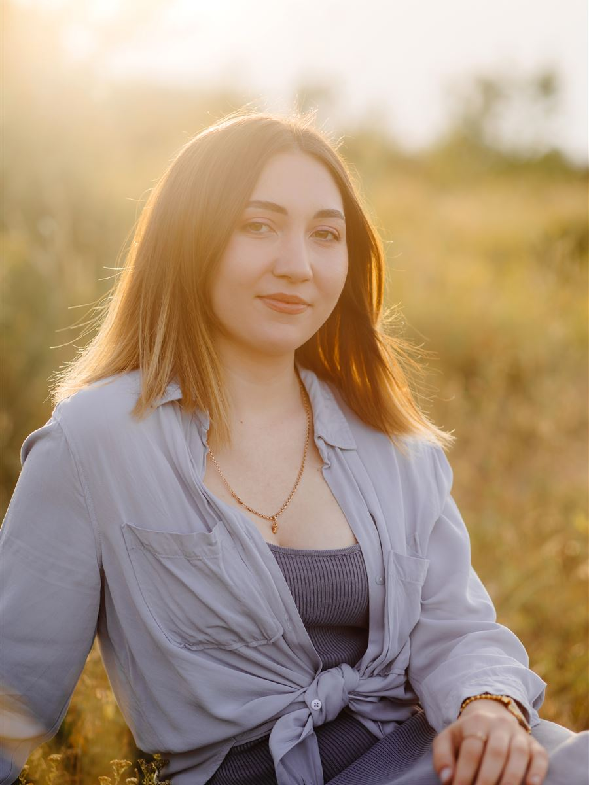
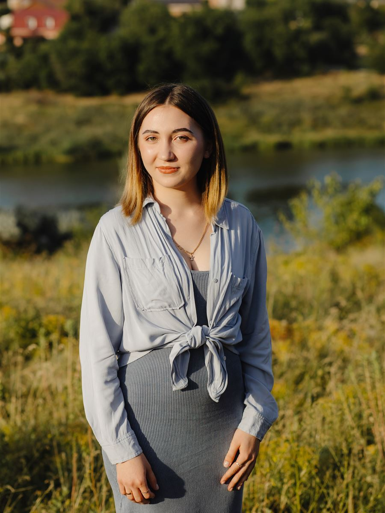
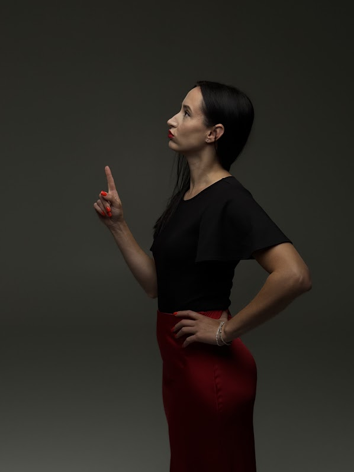
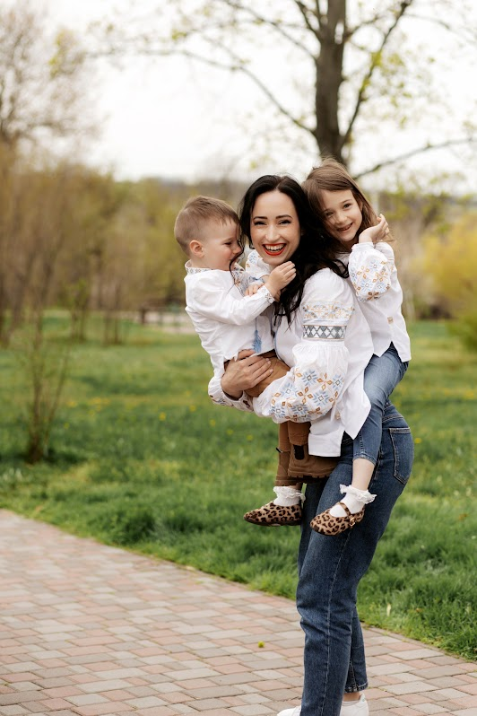
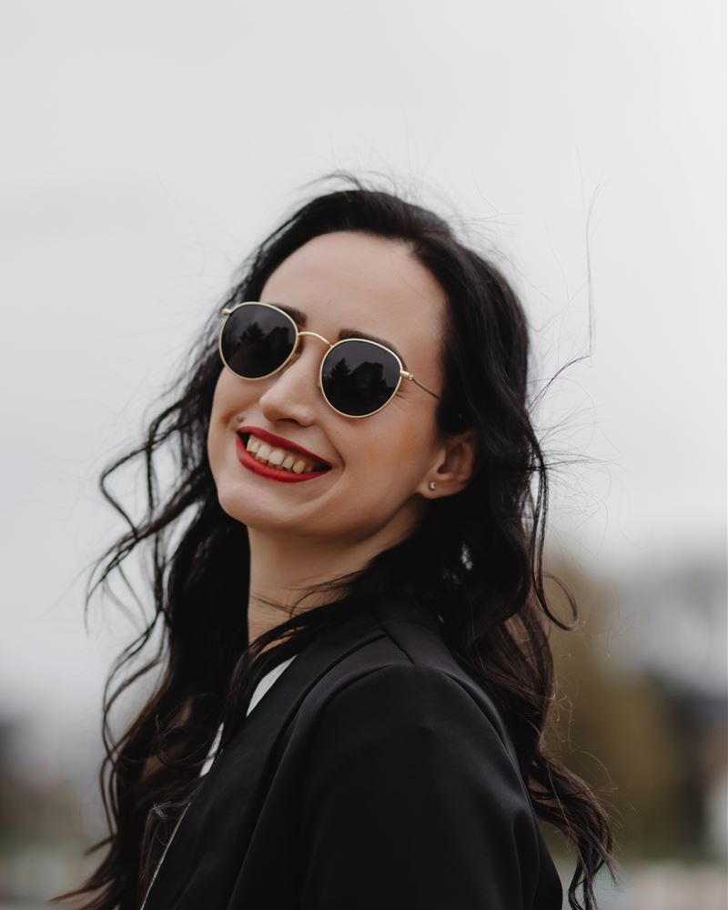

Бухгалтерія, з якою спокійно
Беремо на себе бухгалтерію ФОП і ТОВ — від реєстрації бізнесу до повного супроводу та звітності. Ви отримуєте порядок у документах, контроль податків і чітке розуміння фінансів.

Без цифр управління бізнесом неможливе. Тоді це не управління, а ілюзія.
Зрозумійте, що насправді відбувається у вашому бізнесі: де ви заробляєте, куди зникають гроші, які процеси потребують уваги та на основі чого приймати правильні управлінські рішення.

- Гроші на рахунку
- Точний залишок і скільки з нього — податки
- Прибуток за місяць
- Реальний прибуток і що його з'їдає
- Склад
- Залишки звірені, нестачу видно одразу
- Податки
- Сума і строк сплати відомі заздалегідь
- Цифри, а не відчуттяЩомісяця бачите прибуток, гроші й борги — і знаєте, яке рішення ухвалити далі.
- Точки контролюПідбираємо зручний документообіг і показуємо, хто в команді за що відповідає.
- Рішення замість проблемЯкщо щось пішло не так, ви отримуєте від нас варіанти виходу з цифрами й нормами закону.
Ви займаєтесь бізнесом.
Податкова, банк і звіти — на нас
Жодних штрафів за пропущені строки, заблокованих накладних і нічних пошуків документів. Оберіть форму бізнесу й подивіться, що ми забираємо на себе.
Відкриття ФОП
Онлайн, без вашої присутності
Відкриття ФОП
Онлайн, без вашої присутності
- Підбір КВЕДів
- Підбір оптимальної системи оподаткування
- Онлайн-реєстрація ФОП без участі власника
Щомісячний бухгалтерський супровід
Податки, ліміти, документи і звіти під контролем
Щомісячний бухгалтерський супровід
Податки, ліміти, документи і звіти під контролем
- Аудит особистого кабінету в податковій
- Реквізити для сплати податків
- Контроль своєчасної і правильної сплати податків
- Щомісячна перевірка банківської виписки
- Контроль ліміту доходу за обраною групою
- Заповнення книги доходів ФОП
- Онлайн-зміна КВЕДів за потреби
- Реєстрація ПРРО і віддалена робота в ньому
- Рахунки, акти, видаткові накладні
- Шаблони договорів надання послуг і реалізації продукції
- Звіти в податкову
- Акти звірки з постачальниками і покупцями
Фінансовий супровід
Автоматизація обліку і структура бізнесу
Фінансовий супровід
Автоматизація обліку і структура бізнесу
- Автоматизація обліку в CRM-системах
- Розроблення структури компанії та бізнес-процесів
- Фінансові документи під ваш запит: первинні документи або фінансові звіти
Кадровий облік
Для ФОП із працівниками
Кадровий облік
Для ФОП із працівниками
- Прийняття на роботу, зокрема під гранти
- Трудові договори
- Нарахування зарплати
- Табель обліку робочого часу
- Лікарняні та декретні
- Звільнення
- Звіти
Фінансовий моніторинг у банку
Запити будь-якої складності
Фінансовий моніторинг у банку
Запити будь-якої складності
- Готуємо пояснення і документи на запити банку
- Супроводжуємо до закриття питання
Закриття ФОП
Без хвостів у податковій
Закриття ФОП
Без хвостів у податковій
- Припинення підприємницької діяльності
- Фінальні звіти і розрахунки з бюджетом
Відкриття ТОВ
Онлайн, за модельним статутом
Відкриття ТОВ
Онлайн, за модельним статутом
- Підбір КВЕДів
- Підбір оптимальної системи оподаткування
- Онлайн-реєстрація за модельним статутом
Повний бухгалтерський супровід
Єдиний податок або загальна система, з ПДВ чи без, експорт та імпорт
Повний бухгалтерський супровід
Єдиний податок або загальна система, з ПДВ чи без, експорт та імпорт
- Рахунки, видаткові накладні, акти надання послуг
- Договори, ТТН, ПРРО, акти звірки
- Клієнт-банк: оформлення платежів і проведення в програмі
- Проведення первинних документів усіх господарських операцій
- Контроль взаєморозрахунків
- Звіти: щомісячні, щоквартальні, щорічні — у податкову, статистику, ПФУ
ПДВ
Реєстрація і розблокування податкових накладних
ПДВ
Реєстрація і розблокування податкових накладних
- Реєстрація податкових накладних
- Розблокування податкових накладних
- Звіти з ПДВ
Кадровий облік
Від прийняття на роботу до звітів
Кадровий облік
Від прийняття на роботу до звітів
- Прийняття на роботу, зокрема під гранти
- Трудові договори
- Нарахування зарплати
- Табель обліку робочого часу
- Лікарняні та декретні
- Звільнення
- Звіти
Управлінський облік для власника
P&L, Cashflow, Balance і звіти для контролю підрозділів
Управлінський облік для власника
P&L, Cashflow, Balance і звіти для контролю підрозділів
- Звіт про прибутки і збитки (P&L)
- Рух грошових коштів (Cashflow)
- Баланс
- Бланки звітів для контролю і управління підрозділами
- Аудит бізнес-процесів у команді
- Пошук проблемних точок, виправлення й оптимізація процесів
Ревізія фінансового відділу
Перевірка обліку і навчання вашої команди
Ревізія фінансового відділу
Перевірка обліку і навчання вашої команди
- Ревізія роботи фінансового відділу і бухгалтерського обліку
- Підвищення кваліфікації бухгалтерів і фінансистів
- Побудова організаційної структури компанії
- Документообіг і точки контролю для власника під реальну роботу компанії
Як ми будуємо облік
Спочатку вивчаємо, як працює ваш бізнес, і визначаємо, що потрібно покращити. Потім налаштовуємо облік та автоматизуємо процеси.
Аналізуємо діяльність
Дивимося, як зараз рухаються документи, гроші й відповідальність у команді.
Знаходимо те, що працює неправильно
Реальні операційні процеси показують, де губляться гроші й час.
Налаштовуємо документообіг
Розподіляємо точки контролю так, щоб власник бачив, хто за що відповідає.
Автоматизуємо
Команда працює ефективніше, комунікація з клієнтами покращується, продажі ростуть.
Давайте знайомитися ближче
Ми не просто працюємо з цифрами — ми стаємо вашими партнерами, яким можна довірити важливе. Відкриті до спілкування, завжди на зв’язку та зацікавлені у вашому результаті.

Кризова менеджерка. Керувала підприємством зі штатом близько 300 людей.


Була фінансовою директоркою, вела ТОВ на загальній системі. 17 років колекціонує настільні ігри.


Прийшла з роздрібу, знає касу зсередини. Любить книжки й прогулянки.
Понад 20 років у бухгалтерії, була головною бухгалтеркою.
Керувала відділом обліку первинної документації: 13 людей у трьох філіях.
Компанія, яка виросла з рекомендацій
Марія ніколи не планувала власну компанію: їй здавалося, що ще рано і треба повчитися. За сім років клієнти, рекомендуючи її знайомим, зібрали її самі.
Оператор у компанії «Спецторг»
Четвертий курс університету в Києві і перша робота з 8 до 18: первинні документи, податкові накладні, акти звірки.
Старша бухгалтерка управлінської компанії
Каса, банківські платежі й авансові звіти по всіх 16 філіях. Згодом — головна бухгалтерка магазину, з якого все починалося.
Фоззі Фарм
Касова дисципліна по всій аптечній мережі. Помилки у звітах помічала вже після закриття зміни, коли виправити їх важко. Тож почала навчати фармацевтів і написала для них інструкції та шпаргалки.
Кав'ярня в Кропивницькому
Прийшла на тимчасову заміну бухгалтерки, а залишилася директоркою. Побудувала облік і кондитерський цех з оптовими продажами та експортом.
Фінансова директорка дистрибуційної компанії
Понад 200 людей, перепродаж бізнесу, переїзд складу й нова база даних. За три роки збудувала фінансовий відділ і систему контролю.
«Радісні фінанси»
У декреті тато попросив вести його бухгалтерію. За ним прийшли наступні клієнти, і так з'явилася компанія.

Кого ведемо зараз
Виробництво, агро, освіта, імпорт і послуги. Кожному бізнесу підбираємо свій документообіг.
Записатися на консультацію- ТОВ, виробництво: повний бухгалтерський і управлінський облік 50 працівників
- ТОВ, автошкола до 20 працівників
- ТОВ, агровиробництво до 10 працівників
- ТОВ, імпорт товарів до 10 працівників
- ФОП на послугах, зокрема з ПДВ 20 клієнтів


9:00–17:00Будні — і все встигаємо вчасно
Добре працює той, хто добре відпочиває
Після 17:00 і у вихідні наша команда з родиною. Організувати роботу так, щоб усе робилося якісно й у робочий час, — відповідальність власниці.
Тому ваші звіти не залежать від чиїхось нічних подвигів: терміни закладені в процес.
Розкажіть про свій бізнес
Залиште контакт. Ми зателефонуємо в робочий час, поставимо кілька запитань і запропонуємо варіанти супроводу.